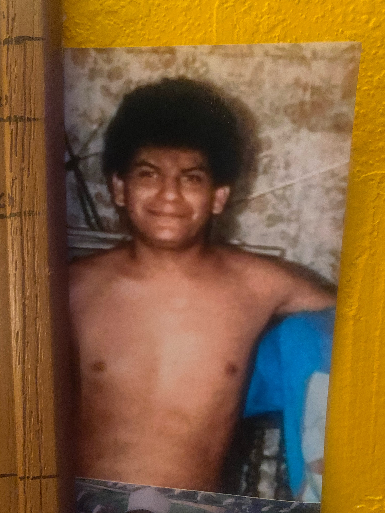

“Algunas personas escriben canciones. Yo primero viví las historias que después se convirtieron en ellas.”
Antes de convertirme en compositor y artista independiente, fui un niño que aprendió que incluso las experiencias más difíciles pueden transformarse en esperanza, propósito y música. Cada canción guarda un fragmento de ese camino.
Comenzar mi historia
Martín González, a los 13 años. Aún no sabía que las experiencias que estaba viviendo algún día se convertirían en canciones.
Nací en Tala, Jalisco, un pueblo de gente trabajadora donde aprendí que los sueños no se heredan: se construyen. Crecí rodeado de valores, sacrificios y esperanza. Desde muy pequeño entendí que cada experiencia, buena o difícil, iba dejando una enseñanza que algún día se convertiría en parte de mi historia.
En aquellos primeros años aprendí que el esfuerzo siempre da frutos. Vi trabajar a mi familia con dedicación y entendí que los grandes sueños comienzan con pequeños pasos. Sin saberlo, cada una de esas experiencias estaba formando la persona y el compositor que llegaría a ser años después.
Antes de conocer los estudios de grabación, los escenarios o la vida artística, conocí el trabajo, las pérdidas y los sueños. Cada una de esas vivencias fue formando mi sensibilidad y, con el paso del tiempo, se convirtió en la materia prima de mis canciones.
“Las raíces no solo nos dicen de dónde venimos; también nos recuerdan por qué seguimos adelante.”
Uno de los primeros sueños que marcó mi vida no fue la música, sino emigrar a Estados Unidos. Fue un cambio enorme, lleno de incertidumbre, sacrificios y esperanza. Aquella experiencia me enseñó que los sueños más grandes casi siempre exigen recorrer los caminos más difíciles.
Aunque la música siempre estuvo presente, al principio era una pasión que nacía de manera natural. En cada reunión donde había un karaoke o un grupo musical, encontraba una oportunidad para cantar. Fue así como descubrí que cada canción me permitía expresar algo que las palabras por sí solas no podían decir.
Tiempo después, un cuñado tenía en su garaje todos los instrumentos para formar un grupo, pero faltaban los músicos. Le dije con entusiasmo: “Yo puedo cantar, tocar la guitarra y también la batería”. Conseguimos un baterista y, casi sin darnos cuenta, nació nuestro primer grupo. Aquella experiencia fue el inicio de un camino que más tarde cambiaría mi vida.
Durante esos años interpretaba con especial admiración las canciones de José José, especialmente El triste y La nave del olvido. Eran canciones de enorme dificultad vocal, y cada vez que las cantaba en un karaoke o frente al público, las personas me animaban diciéndome que debía seguir cantando. Sin saberlo, esas palabras iban sembrando una idea que crecería con el tiempo.
“Los sueños comienzan como una ilusión; el trabajo es lo que termina convirtiéndolos en realidad.”
Las canciones llegaron a mi vida mucho después de descubrir que las palabras tenían un poder especial. Desde muy joven me gustaba escribir. En la escuela, cuando algún compañero tenía dificultades para expresar lo que sentía, me pedía ayuda para escribir una carta. Muchas veces eran cartas de amor. Yo escuchaba su historia, trataba de entender sus emociones y luego las convertía en palabras. Para mi sorpresa, aquellas cartas lograban tocar el corazón de quien las recibía.
Con el tiempo comprendí que no solo escribía cartas; también escuchaba a las personas. Me gustaba aconsejarlas, ayudarles a encontrar esperanza y mostrarles otra manera de enfrentar los problemas. Sin saberlo, esas conversaciones fueron despertando en mí la sensibilidad que años después daría vida a mis canciones.
La primera canción que realmente marcó mi camino nació del dolor más profundo que había experimentado hasta ese momento: la pérdida de mi madre. La extrañaba tanto que muchas veces levantaba la mirada al cielo y pronunciaba su nombre con la esperanza de escuchar una respuesta. El silencio fue la única respuesta, pero también fue el origen de una canción que transformó ese dolor en palabras. Aquella experiencia me hizo descubrir que escribir también podía sanar.
Al principio escribía en cualquier lugar: servilletas, hojas sueltas o cualquier papel que tuviera a la mano. Más adelante empecé a organizar mis ideas en libretas y, después de hacer los primeros borradores, las pasaba a máquina para conservarlas. Poco a poco comprendí que ya no estaba escribiendo por casualidad; estaba construyendo una colección de historias que algún día encontrarían su propia voz.
Cuando terminé mis primeras diez canciones sentí algo diferente. Ya no era solamente una afición. Había descubierto una parte de mí que necesitaba seguir creando. Cada canción terminada me llenaba de orgullo, pero, sobre todo, me despertaba el deseo de escribir la siguiente. Fue entonces cuando entendí que la composición dejaría de ser un pasatiempo para convertirse en una parte esencial de mi vida.
“Descubrí que las palabras pueden aliviar el dolor, pero cuando esas palabras se convierten en música, también pueden darle esperanza a quien las escucha.”
A lo largo de mi vida entendí que ningún sueño se construye completamente solo. Detrás de cada paso importante siempre hubo personas que me dieron fuerza para continuar. Mi familia se convirtió en el refugio donde encontraba motivación para seguir adelante, incluso en los momentos más difíciles.
Con el tiempo descubrí que el mayor éxito no consiste únicamente en escribir canciones o subir a un escenario. El verdadero éxito es regresar a casa y compartir cada logro con las personas que han estado presentes desde el principio. Ellos fueron quienes celebraron mis victorias, me levantaron en las derrotas y nunca dejaron de creer en mí.
Cada nueva canción también lleva un poco de ellos. En mis letras viven los valores que aprendí en casa: el respeto, la perseverancia, la humildad y la esperanza. Por eso, cuando alguien escucha una de mis composiciones, también está escuchando una parte de la historia de mi familia.
Con el paso de los años comprendí que un nombre puede representar mucho más que una simple identidad. Puede convertirse en un compromiso, una filosofía de vida y un legado que merece ser honrado. Así nació el nombre que hoy acompaña mi proyecto artístico: Maravillas.
Desde que era niño escuchaba que muchas personas llamaban a mi padre "Maravillas". No era un apodo cualquiera. Se lo había ganado porque, sin importar lo difícil que pareciera un problema, siempre encontraba la manera de resolverlo. Para él no existían los imposibles; donde otros veían obstáculos, él encontraba soluciones. Por eso decían que hacía verdaderas maravillas.
Con el tiempo entendí que ese nombre representaba mucho más que una habilidad. Representaba una manera de vivir: trabajar con honestidad, no rendirse jamás y buscar siempre una solución antes que una excusa. Decidí llevar ese nombre con orgullo como un homenaje a la persona que sembró en mí esos valores.
Años después nació también Maravillas NOV. Las letras NOV hacen referencia a noviembre, el mes en que nací. De esa manera uní mi historia personal con el legado de mi padre, creando una identidad que hoy representa no solo mi música, sino también la forma en que quiero caminar por la vida.
Cada vez que alguien escucha el nombre Maravillas, deseo que no piense únicamente en un artista. Quiero que piense en alguien que cree en los sueños, que transforma las experiencias en canciones y que nunca deja de buscar una solución, incluso cuando el camino parece imposible.
"Maravillas no nació como un nombre artístico. Nació como un legado que decidí llevar con orgullo y convertir en una forma de vivir."